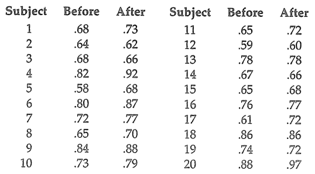

climb=matrix(c(73, 14, 9, 12), byrow=TRUE, nrow=2, ncol=2)
climb [,1] [,2]
[1,] 73 14
[2,] 9 12Statistika Nonparametrik


climb=matrix(c(73, 14, 9, 12), byrow=TRUE, nrow=2, ncol=2)
climb [,1] [,2]
[1,] 73 14
[2,] 9 12Uji Hipotesis :
\(H_0: \text{Tidak terdapat perbedaan signifikan}\)
\(H_1: \text{Tidak demikian}\)
library(stats)
#H0: Tidak terdapat perbedaan signifikan
mcnemar.test(climb) #Package stats
McNemar's Chi-squared test with continuity correction
data: climb
McNemar's chi-squared = 0.69565, df = 1, p-value = 0.4042Apa maksudnya Continuity Correction?
Telusuri sumber berikut: Continuity Correction on Wikipedia
Kenapa digunakan pada fungsi mcnemar.test()?
Telusuri sumber berikut: Continuity Correction for Pearson and McNemar’s Chi Square Test
mcnemar.test(climb, correct=FALSE)
McNemar's Chi-squared test
data: climb
McNemar's chi-squared = 1.087, df = 1, p-value = 0.2971Lebih baik jika kita menggunakan mcnemar.exact() dari library exact2x2
library(exact2x2)Loading required package: exactciLoading required package: ssanvLoading required package: testthatmcnemar.exact(climb) #Package exact2x2
Exact McNemar test (with central confidence intervals)
data: climb
b = 14, c = 9, p-value = 0.4049
alternative hypothesis: true odds ratio is not equal to 1
95 percent confidence interval:
0.6271247 4.0741737
sample estimates:
odds ratio
1.555556 mcnemar.test()
https://www.rdocumentation.org/packages/stats/versions/3.6.2/topics/mcnemar.test
atau run ?mcnemar.test setelah import library stats
| Not Opposed | Opposed | |
|---|---|---|
| Not Opposed | 72 | 30 |
| Opposed | 36 | 7 |
| Cars | 9.8 | 9.9 | 10.0 | 9.8 | 9.2 | 9.4 | 9.5 | 9.6 | 9.8 | 9.3 | 8.9 | 8.7 | 9.2 | 9.3 |
|---|---|---|---|---|---|---|---|---|---|---|---|---|---|---|
| Trucks | 11.5 | 11.5 | 12.2 | 11.5 | 10.9 | 10.6 | 11.1 | 11.1 | 11.0 | 10.8 | 11.4 | 12.3 | 11.2 | 11.2 |
cars=c(9.8, 9.9, 10, 9.8, 9.2, 9.4, 9.5,
9.6, 9.8, 9.3, 8.9, 8.7, 9.2, 9.3)
trucks=c(11.5, 11.5, 12.2, 11.5, 10.9, 10.6, 11.1,
11.1, 11, 10.8, 11.4, 12.3, 11.2, 11.2)Uji Hipotesis :
\(H_0: \text{Kasus Monoton}\)
\(H_1: \text{Tidak demikian}\)
library(randtests)
cox.stuart.test(cars, alternative="two.sided") #Package randtests
Cox Stuart test
data: cars
statistic = 0, n = 7, p-value = 0.01563
alternative hypothesis: non randomnesscox.stuart.test(trucks, alternative="two.sided")
Cox Stuart test
data: trucks
statistic = 3, n = 7, p-value = 1
alternative hypothesis: non randomnessUji apakah cars memiliki trend naik/turun?
Uji Hipotesis :
\(H_0: \text{Kasus Monoton Tidak Naik}\)
\(H_1: \text{Terdapat Tren Naik}\)
cox.stuart.test(cars, alternative="right.sided")
Cox Stuart test
data: cars
statistic = 0, n = 7, p-value = 1
alternative hypothesis: increasing trendUji Hipotesis :
\(H_0: \text{Kasus Monoton Tidak Turun}\)
\(H_1: \text{Terdapat Tren Turun}\)
cox.stuart.test(cars, alternative="left.sided")
Cox Stuart test
data: cars
statistic = 0, n = 7, p-value = 0.007813
alternative hypothesis: decreasing trend| Set I | 1 | 1 | 1 | 1 | 1 | 3 | 3 | 5 | 5 | 7 | 7 |
|---|---|---|---|---|---|---|---|---|---|---|---|
| Set II | 1 | 2 | 2 | 4 | 4 | 4 | 4 | 5 | 5 | 5 | 7 |
Apakah di antara kelompok terdapat perbedaan yang signifikan?
x=c(1,1,1,1,1,3,3,5,5,7,7)
y=c(1,2,2,4,4,4,4,5,5,5,7)Uji Hipotesis :
\(H_0: \text{Tidak terdapat perbedaan yang signfikan antara X dan Y (Ekspektasi X = Ekspektasi Y)}\)
\(H_1: \text{Tidak demikian}\)
Library stats memiliki function wilcox.test() yang dapat digunakan untuk melakukan uji Wilcoxon. Tetapi tidak bisa menghitung exact p-value pada data dengan ties.
wilcox.test(x, y, alternative='two.sided') #Package statsWarning in wilcox.test.default(x, y, alternative = "two.sided"): cannot compute
exact p-value with ties
Wilcoxon rank sum test with continuity correction
data: x and y
W = 46.5, p-value = 0.3656
alternative hypothesis: true location shift is not equal to 0Sebagai alternatif, gunakan fungsi wilcoxsign_test() dari library coin
library(coin)Loading required package: survival
Attaching package: 'coin'The following object is masked from 'package:testthat':
expectationwilcoxsign_test(y~x, distribution="exact", zero.method="Wilcoxon")
Exact Wilcoxon Signed-Rank Test
data: y by x (pos, neg)
stratified by block
Z = 1.5521, p-value = 0.1875
alternative hypothesis: true mu is not equal to 0wilcoxsign_test(y~x, distribution="approximate", zero.method="Wilcoxon")
Approximative Wilcoxon Signed-Rank Test
data: y by x (pos, neg)
stratified by block
Z = 1.5521, p-value = 0.1828
alternative hypothesis: true mu is not equal to 0
Does alcohol affect reaction time?